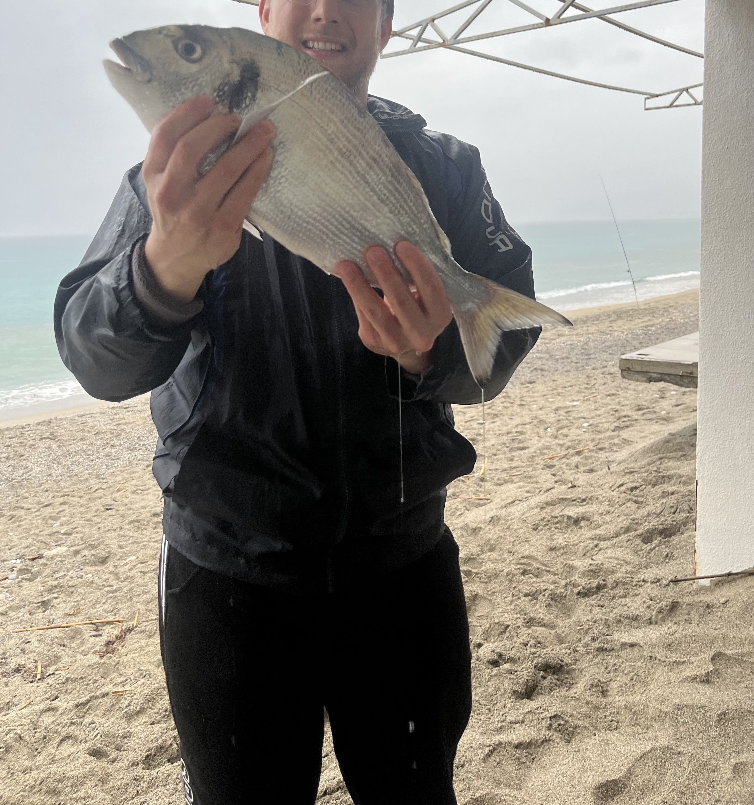
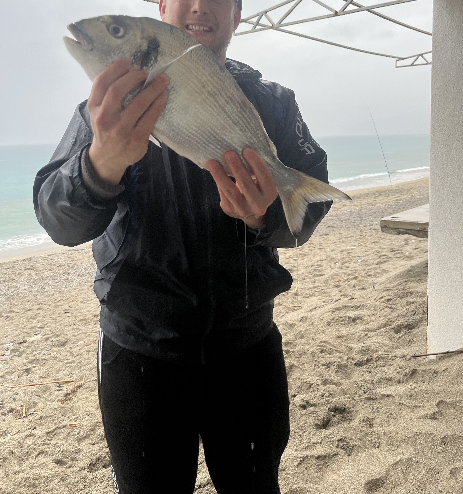

Guida e charter di pesca in Liguria
La pesca è più bella quando la si condivide
Ti accompagno a pescare in Liguria, per imparare, migliorare o semplicemente vivere una giornata di passione per il mare.
 


Dove andremo a pesca insieme?
Principalmente in Liguria: scegliamo lo spot in base a meteo, mare, stagione e al tuo livello. L’obiettivo è farti vivere un’uscita bella, sicura e formativa.


Tecniche di pesca
Possiamo scegliere la tecnica in base al tuo livello e alle condizioni del mare.
Il mare cambia ogni giorno. Troviamo il momento giusto insieme!
Ogni uscita va organizzata in base a vento, corrente e stagione. Se vuoi programmare la tua giornata di pesca, scrivimi e troviamo insieme il momento giusto.
Per scrivermi, usa il pulsante WhatsApp in basso a destra. In alternativa, se preferisci chiamarmi o contattarmi via email, trovi i miei recapiti nel footer.